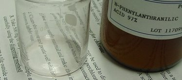
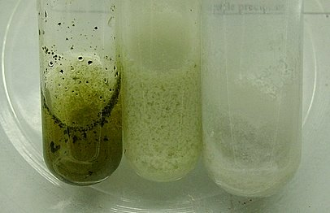
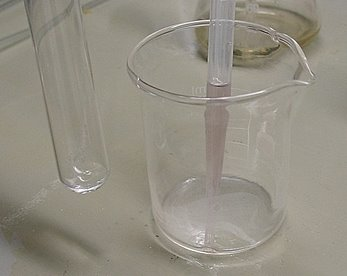
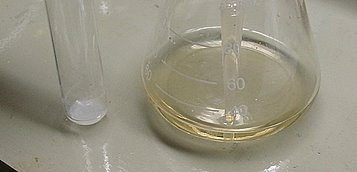
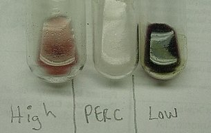
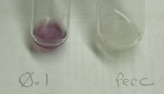
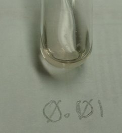
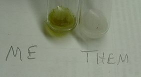

Is it Pure? Testing for Chlorates
The following is from Swede's blog on at WWW.APCFORUM.NET
http://www.apcforum.net/forums/index.php?autocom=blog&blogid=2&showentry=20
One of the most critical things you can do when you manufacture perchlorates is to ensure that your product is, in fact, free of chlorate contamination. There's no reason to bother converting your chlorate to perchlorate if you are not going to clean it up... you may as well use the chlorate itself.
There are a few methods to test for chlorate. I am not going to go into them in detail, except for one. Suffice it to say that none of them is totally simple AND sensitive. It's not like dipping pH paper. It takes a bit of effort to create a sensitive test, but of course it's worth it.
One of the tests I tried makes use of a chemical called N-Phenylanthranilic Acid, which I will call NPAA. NPAA is not something you buy in a feed store. It took some effort to obtain 50 grams of so, and it is not cheap. The good news is, a little goes a long way. The bad news is, the traditional test procedure itself, as Wouter Visser describes it on his excellent website, frankly sucks, and I think I have come up with a better way to do it.

NPAA comes as a fine, grey powder, with a bit of a funky smell. It is not particularly hazardous. Wouter's procedure is to dissolve a small amount in concentrated sulfuric acid, and then add a few drops of this to your aqueous sample. A brown or red coloration is indicative of chlorate presence, while a white precipitate indicates pure perchlorate. This is the result, using Wouter's method, on three different test samples:

It kind of worked. The sample far right is commercial perchlorate. The other two were intentionally chlorate-contaminated in varying degrees. Overall I didn't think this test had good sensitivity, and as-described by Wouter, I simply didn't care for it. Getting significant color required too much acid, which chews up the goods, as I am guessing the ratio of acid to NPAA is too high. It is the NPAA that creates the color in an acid environment. Dissolving NPAA in sulfuric is a pain; storing it in that state, ready to use, is out of the question.
I thought a bit... NPAA is simply an indicator. Why not use something else to carry the NPAA, then slowly acidify the sample with the sulfuric? This way, I can go heavy or light with the indicator stock, and acidify as needed to develop the coloration if it is there.
I dissolved a very small amount of NPAA in 99% isopropyl alcohol, which promptly turned a transparent grey color. I also added some concentrated sulfuric acid to an erlenmeyer flask, ready to use as needed. The tincture of NPAA is on the right:

My first test was to repeat the earlier effort with three samples, 1.0 g/l chlorate, saturated chlorate, and commercial perchlorate. Aqueous samples are used. I strongly recommend you DO NOT drip concentrated sulfuric acid on unknown, powdered oxidizers! Three test tubes were prepared with the samples. The sample size was small, just enough to cover the bottom of the test tube. Into each, I added three drops of the indicator tincture. This immediately produces a white precipitate in all cases, as seen here:

Then, each sample received 5 drops of concentrated sulfuric. If you see color, but it disappears, add a few more drops of sulfuric. The color then stabilizes. Here are the results:

All right! Looks good! Interestingly, the sample that had a lower chlorate concentration produced a deeper coloration. The colors do seem to vary, but ANY discernible color equals chlorate contamination.
The next step... how sensitive is it? If the test is not sensitive enough, it's useless. I diluted my 1.0 g/l sample by ten, creating a 0.1 g/l chlorate solution. Was it sensitive enough to detect this low level?

The colour can be easily seen.
The sample was cut by a factor of 10 again, creating a 0.01 g/l chlorate solution.

NOW it's getting tricky. The picture doesn't show it well, but there was a discernible color. 0.01 g/l is like a pinhead of chlorate tossed in a one liter bottle. Excellent sensitivity. After this test, I halted any further dilutions... I knew the procedure worked.
The next interesting test for me was to check my raw, recently harvested perchlorate. I was under no illusion that it would be pure, and I fully expected strong coloration. I was not disappointed...

It didn't even have the dignity to turn a pretty shade - it looked more like mouse turds in water.
The test development was a total success, and the use of a tincture of NPAA vs. dissolving it in sulfuric allows for a MUCH easier test procedure. It also allows me to store the tincture in a ready to use form. The other promising chlorate test Wouter describes makes use of indigo carmine, HCl, and a bit of boiling. If I can get away from boiling, especially boiling HCl, I'm all for it, and will stick with the NPAA test, but I'm sure I'll try the indigo carmine at some point.
HIT THE BACK BUTTON ON YOUR BROWSER
BACK TO TOP